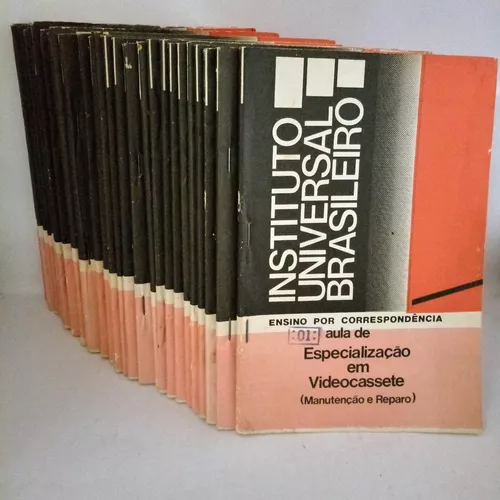
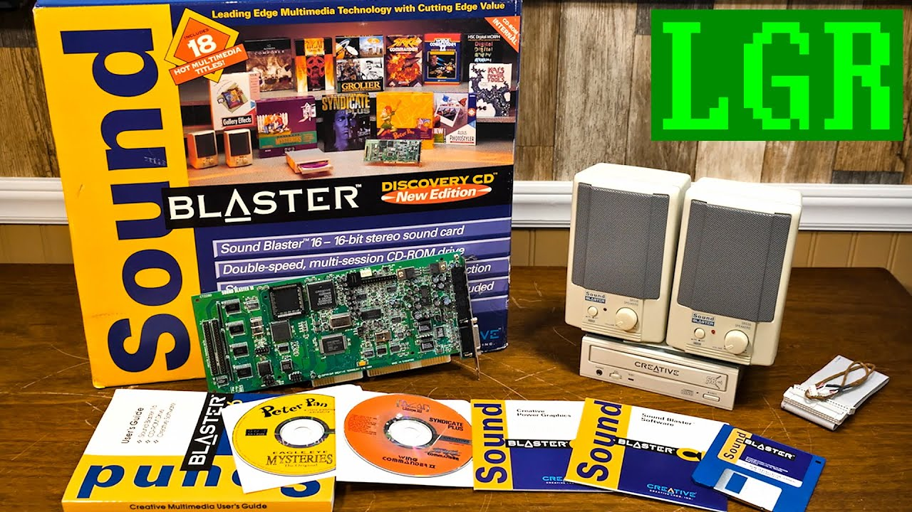
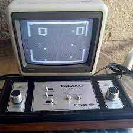

Wanderson Marcos de Jesus Vicente
Estudante de desenvolvimento web Full Stack - Trybe
Volta Redonda - RJ, Brasil
wandersonvicente@gmail.com
Desde criança, sempre fui muito curioso. Sempre desmontava tudo para saber como funcionava.Às vezes, não conseguia montar novamente, rsrs. Adorava uma coleção de livros da editora Abril chamada "Como Funciona".

Acabei me interessando por eletrônica na época e sempre comprava revistas de eletrônica em bancas de jornais para fazer as montagens (sirene, pisca-pisca de LEDs, transmissor de FM, etc.).

Em minha adolescência, apareceu em fascículos uma publicação sobre informática e programação básica chamada INPUT. Fiquei doido com os fascículos, lia tudo, porém não tinha computador para testar. Por curiosidade, os computadores da época na maioria eram baseados no Z-80, tinham entre 16 e 48 Kb de memória. Isso mesmo, rsrs, era só uma vaga lembrança. Tudo era gravado em gravadores de fita cassete portáteis e o monitor era a TV de tubo da época.


Meu primeiro micro foi um TK-85 com gravador National, e a TV era a da sala mesmo. Não tinha internet, o negócio era comprar as revistas e digitar os programas, rsrs. Às vezes conseguia uma fita emprestada com um amigo e fazia aquela cópia, mas era divertido.


Fiz um curso de eletrônica (IUB - Instituto Universal Brasileiro) por correspondência, é meu amigo e minha amiga naquela época era pelos correios na de cursos on-line. Arrumava uma coisa aqui, outra ali, mas nunca trabalhei com eletrônica.Tive a oportunidade de trabalhar em uma escola de informática como monitor, ficava lá mesmo pelos computadores, já que podia usar à vontade.
Quando as escolas de informática começaram a pipocar no país, eu dava aulas de MS-DOS, LOTUS 1-2-3 (Excel da época), WORD STAR (Word da época) e DBASE (Banco de dados da época). Depois vieram o WINDOWS 3.1, WINDOWS 95, WINDOWS 98 e assim foi. Acabei de lembrar agora dos primeiros kits multímidias da decada de 90, o mais famoso e caro era o da "Sound Blaster", o kit era composto por uma placa de som, é meus amigos naquela época os PC não tinham som só bips, rsrs, um par de caixas de som, uma unidade de CD-ROM 2X "só leitura nada de gravação" e cds e acessórios, PURO LUXO DA ÉPOCA, rsrs. Até 1998, dei muitas aulas em cursinhos de informática. A partir de 1998, comecei a fazer montagem e manutenção de computadores. Mais tarde, fazia cabeamento de redes e manutenção de impressoras jato de tinta e matriciais.
Em 2006, por motivos adversos e influências pessoais, acabei abandonando a área e iniciei uma jornada totalmente diferente. Comecei a trabalhar em uma empresa de construção civil para a indústria, onde comecei como auxiliar de almoxarife e cheguei a supervisor de almoxarifado. Fui gerente administrativo de uma empresa de locação/assistência técnica de equipamentos para a indústria, gerente operacional de uma empresa de topografia e supervisor operacional de logística.
Até no futuro, quer dizer presente, rsrs, onde quero voltar para o lugar que não deveria ter saído, e me tornar um desenvolvedor e mostrar para muitos que a idade em tecnologia não é um obstáculo, apesar de eu ter jogado um telejogo da época dos dinosauros, rsrs, isto é verdade olha a foto dele, kkkk, era o que tinha para a época.
